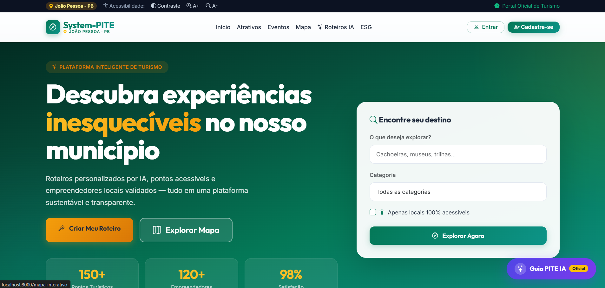
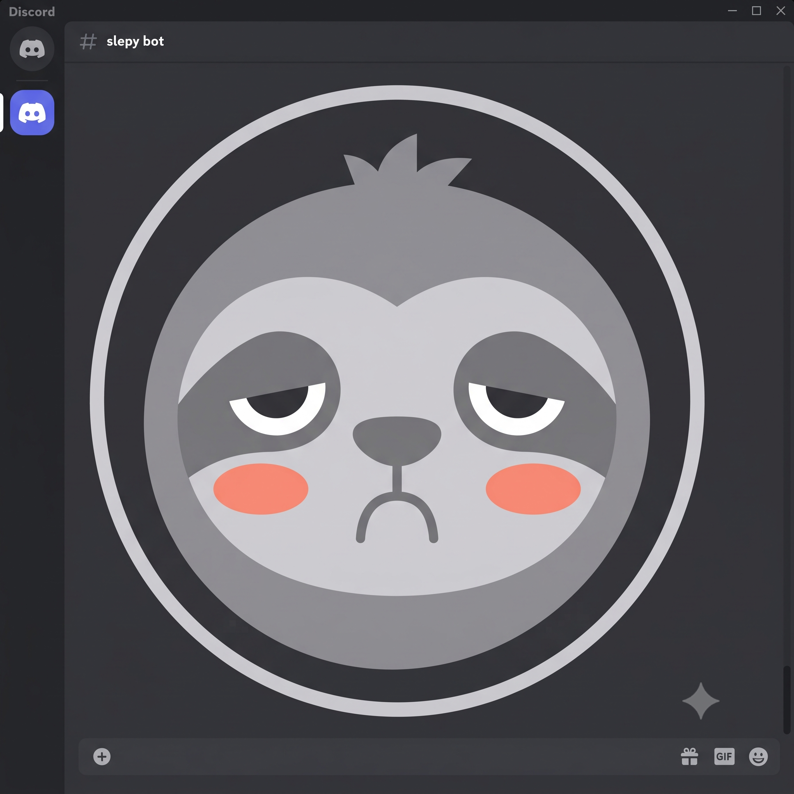

Desenvolvedor de Software Full Stack
DELOS CONSULTORIA
Atuei na evolução de uma aplicação GIS para o setor elétrico, trabalhando entre React, Next.js, TypeScript, Python, Django e PostgreSQL.
Júlio Kennedy dos Santos Silva
Estudante de Análise e Desenvolvimento de Sistemas no IFPB. Tenho experiência com aplicações web, APIs, bancos de dados, regras de negócio e automações.
React
·Python
·Java
·PostgreSQL
·APIs
O que já fiz profissionalmente.
DELOS CONSULTORIA
Atuei na evolução de uma aplicação GIS para o setor elétrico, trabalhando entre React, Next.js, TypeScript, Python, Django e PostgreSQL.
EMEF JAIME LACET
Ministrei aulas de informática básica e apoiei a alfabetização digital, desenvolvendo didática para tornar conceitos técnicos acessíveis.
Ferramentas que fazem parte do meu trabalho e dos meus estudos.
Projetos acadêmicos, pessoais e colaborativos que mostram como aplico o que estudo.

System-PITEPlataforma de gestão pública para o turismo municipal, com portal para turistas, empreendedores e administração.
Inclui roteiros personalizados, acessibilidade, geolocalização, indicadores ESG, painéis de gestão e controle de estabelecimentos.

SLEPYBot de produtividade para Discord feito para transformar tempo de foco em progresso.
Possui sessões de foco, Pomodoro, comandos Slash, perfil com minutos acumulados, badges e persistência em SQLite, organizado em Cogs.
Aplicação web para gerenciamento e reserva de quadras esportivas.
O projeto trabalha o fluxo de reservas, regras de negócio, uma API REST em Spring Boot e uma interface responsiva em React.
Experimentos que fizeram parte do meu aprendizado.
link-em-QrCode explora bibliotecas Python para transformar links em QR Codes. Snake-game recria o jogo da cobrinha com HTML, CSS e JavaScript.
Análise e Desenvolvimento de Sistemas
Instituto Federal da Paraíba · 2024 — 2027
Português nativo
Inglês intermediário · leitura técnica
Você pode me encontrar pelo e-mail, LinkedIn ou GitHub.
kennedyy.devv@gmail.com ↗ GitHub
GitHub Codewars
Codewars